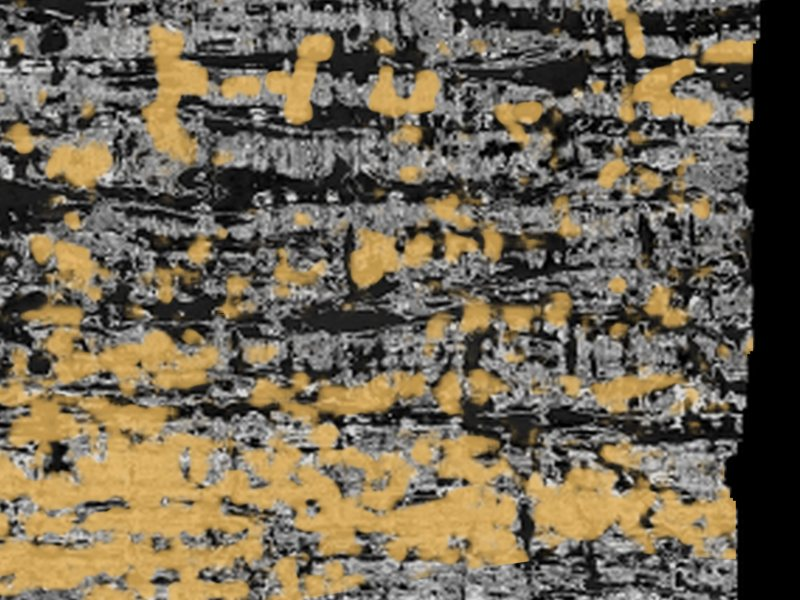
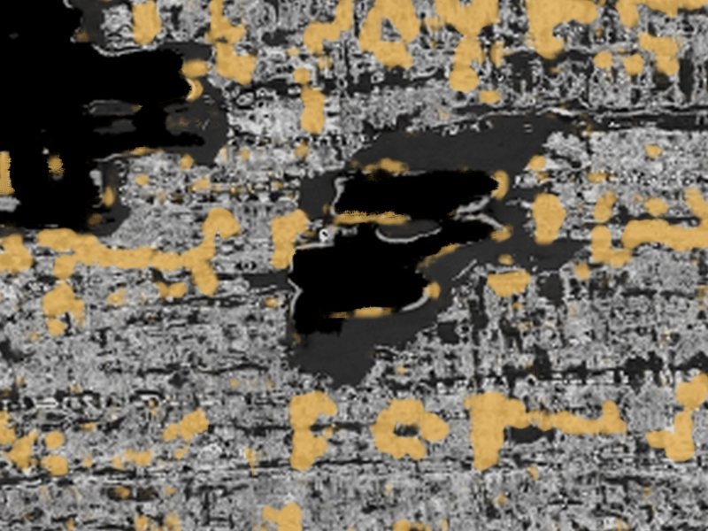

PHerc. 1667 · Biblioteca Nazionale di Napoli
Read from end to end
This is Scroll 4, the first to be virtually unrolled all the way and read end to end: a philosophical work on ethics, reviewed by papyrologists. The pictures here are the AI's ink maps, not a new edition of that text.

4 pieces to explore
A page from the first complete scroll
A wrap from the first Herculaneum scroll to be read from end to end.
Explore →
The neighbouring page
The next wrap of the same fully-read scroll.
Explore →
Two turns further
Another turn of the ethics scroll, a little further in.
Explore →
One more turn
One more neighbouring wrap from the same scroll.
Explore →